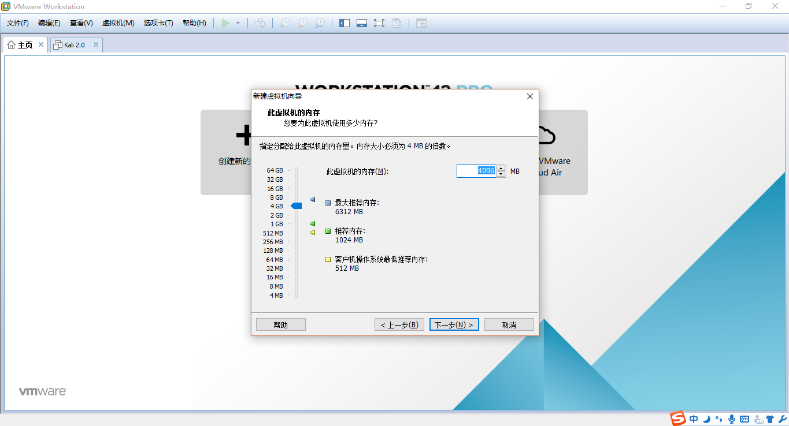
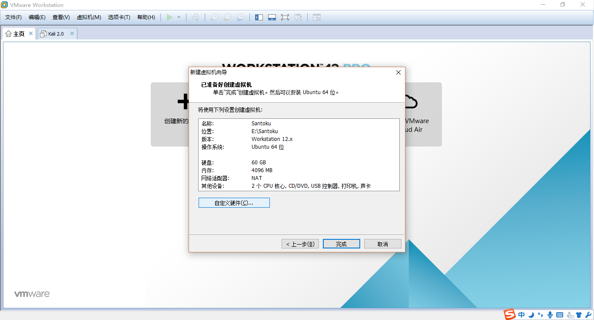
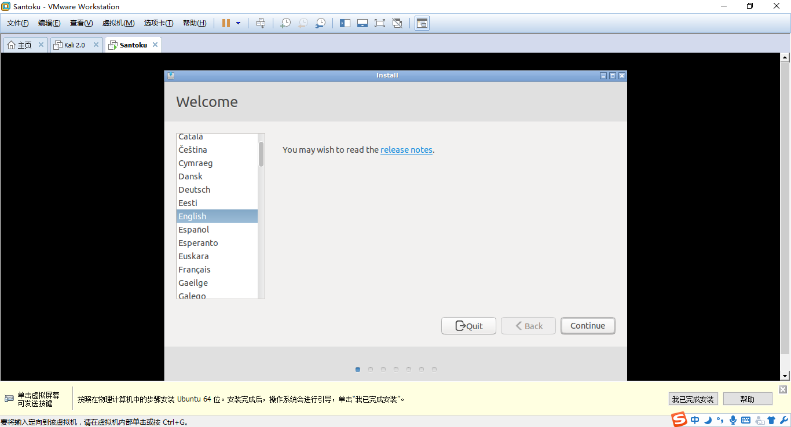

Author：wnagzihxa1n
Mail：tudouboom@163.com
Santoku好像不同版本安装时基于的系统不一样，以前是Debian，后来是Ubuntu
我在不同的地方看到的安装文章都不是很统一
所以还是按照官网的说明来，第一个是Santoku的种子，第二个是安装Santoku，第三个是安装VMware Tools
另外官网在最前强调了几点
简单翻译一下
.iso安装包新建虚拟机，选择自定义模式，然后点击下一步
点击下一步

选择第三个稍后安装操作系统

这里的选择得根据官网提示，如果Santoku是0.4及以后的，比如我目前下载到的是0.5，所以需要选择Ubuntu 64位
Note: For Santoku Linux 0.4 and newer, select “Ubuntu 64-bit”.

给两个处理，毕竟我这有四核，大家根据自己机子的情况看着给

我的机子是8G内存，给4G，官网已经友情提示了如果想在Santoku里跑模拟器就至少得给4G的内存
Select an appropriate amount of memory for the VM. 512MB is standard, however increasing the memory size will typically make your VM run faster (but your host machine slower). If you’re going to use the Android Virtual Device Manager (AVD) and Android device Emulator frequently, we recommend selecting at least 4 GB of memory.

这里网络连接的方式默认即可

默认

默认

选择创建新磁盘

给60G，选择将虚拟磁盘存储为单个文件

默认，将来在赋值虚拟机文件夹的时候，如果需要重新打开，就是选择的这个文件

点击自定义硬件

点击新 CD/DVD，看右边，先选择使用ISO镜像文件，再点击浏览，选择我们下载的Santoku镜像文件，最后点击右下角的关闭

基本的配置完成后，回到主界面，点击开启虚拟机

选择第三项，按回车进行安装

进入语言选择，我这里选择英语

下面有两个选项，全都不勾选，安装过程中更新以及安装其它的软件会很慢

选择第一个，作用是抹掉分配的硬盘空间所有数据

最开始定位到了Harbin，我就不能理解了，手动回到Shanghai

键盘的选择默认即可，如果语言选择的是简体中文，那么这里应该是中文的键盘

用户名，密码什么什么的

然后漫长的安装过程，等等等等。。。。。。

安装完后弹出登录框，按照设置的密码输入即可登录，然后点击虚拟机->安装VMware Tools

弹出一个窗口，点击OK，接着会弹出一个文件夹窗口，如图直接拷贝这个压缩文件到主目录下

为了方便，我先切换到Root用户，因为是新装的系统，需要设置Root用户密码，然后输入密码，再输入两次密码即可
wnagzihxa1n@Santoku:~$ sudo passwd
切换到Root用户
wnagzihxa1n@Santoku:~$ su
Password:
root@Santoku:/home/wnagzihxa1n/#
想解压的话，得先给权限
root@Santoku:/home/wnagzihxa1n/# chmod 777 VMwareTools-10.1.6-5214329.tar.gz
然后再解压
root@Santoku:/home/wnagzihxa1n/# tar -zxvf VMwareTools-10.1.6-5214329.tar.gz
最后安装即可
root@Santoku:/home/wnagzihxa1n/# cd vmware-tools-distrip
root@Santoku:/home/wnagzihxa1n/vmware-tools-distrip# ./vmware-install.pl

执行安装脚本的时候，出现一个询问，输入y
Do you still want to proceed with this installation?[no]
然后一路回车，最后安装完成，重启

最关键的工具在Santoku路径下

简单的整理了一波，这是Santoku 0.5的工具集，直观的看，缺少了JEB，如果有需要可以自己补上
这个其实没有太大更新的必要，因为以前搞开发，所以随着谷歌的更新，4到7的SDK就全都下了，70个G。。。。。。
这里只是简单地跑个模拟器而已，默认安装的那些就行了

本来想看一下Santoku自带的Android Studio玩起来感觉咋样，结果是不咋样
需要连VPN这里才能完成，不过，吃饱撑着才在虚拟机里开Android Studio，而且这里的Java是OpenJDK，Android Studio需要的是Oracle JDK

所以这里我就不管了，反正开发这种活通常宿主机干
JEB和Jadx这些工具不打算在Santoku里装了，这种静态分析在宿主机搞搞就好，其实在Ubuntu里使用JEB的体验蛮差的